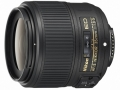

器材库 > 35mm画幅AF定焦镜头 > AF-S 35/1.8G ED

详细规格
镜头类型
广角镜头
发布日期
2014-01-07
焦距
35mm
最大光圈
f/1.8
最小光圈
f/16
视角（对角）
63°
镜头结构
11片/8组
非球面镜片
1片
低/超低色散镜片
1片
光圈叶片
7片
最近对焦距离
25cm
驱动马达
SWM（宁静波动马达）
滤镜口径
58mm
镜头卡口
Nikon AF
防抖
否
颜色
黑色
尺寸
72×71.5mm
重量
305g
林岐2017-01-12 18:074.67 分
操作性 4.50耐用性 4.50性价比 4.50解像力 5.00色彩还原 5.00机械结构 4.50
绯色星云2015-05-13 16:124.83 分
操作性 5.00耐用性 4.50性价比 5.00解像力 5.00色彩还原 5.00机械结构 4.50
diggol2014-12-11 14:511.67 分
操作性 0.50耐用性 0.50性价比 0.50解像力 4.00色彩还原 4.00机械结构 0.50
xxt772014-06-14 21:373.83 分
操作性 4.00耐用性 4.00性价比 3.50解像力 4.00色彩还原 4.00机械结构 3.50
三月龙2014-06-08 21:065 分
操作性 5.00耐用性 5.00性价比 5.00解像力 5.00色彩还原 5.00机械结构 5.00
ooesii2014-04-01 14:344.83 分
操作性 5.00耐用性 5.00性价比 5.00解像力 4.50色彩还原 4.50机械结构 5.00
乱拍客2014-03-08 17:244.83 分
操作性 5.00耐用性 5.00性价比 5.00解像力 4.50色彩还原 4.50机械结构 5.00
产品图 / 样片
AF-S 35/1.8G ED
评测 / 相关文章
- 1.8G军团新成员 AF-S尼克尔35/1.8G ED评测 （存档）
- ［试用］AF-S尼克尔35/1.8G ED评测样张 （存档）
- ［资讯］1.8G军团新员 AF-S 35/1.8G开箱图赏 （存档）
- ［试用］尼康AF-S 35/1.8G ED开箱及试镜 （存档）
- ［试用］尼康35/1.8G ED镜头开箱 （存档）
- ［资讯］尼康AF-S 35/1.8G ED官方样片欣赏 （存档）